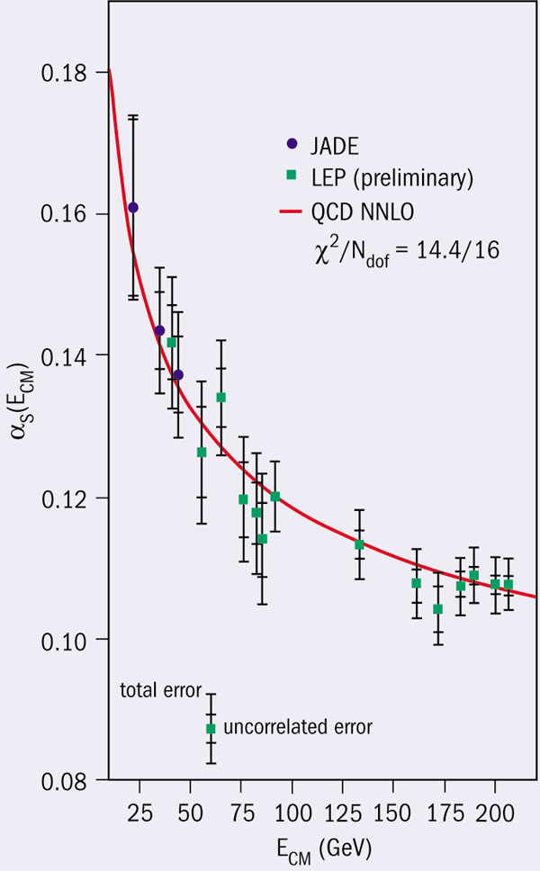

Como vimos, a interação eletromagnética se faz entre cargas elétricas que trocam fótons e a interação forte entre cargas de cor que trocam glúons. No entanto, há uma diferença entre estas interações: à medida que cargas elétricas se aproximam, a interação fica mais forte, ao passo de que à medida que cargas de cor se aproximam, a interação fica mais fraca. A este fenômeno damos o nome de liberdade assintótica.
Esta propriedade foi descoberta por Wilczek, Gross e Politzer em 1973 e foi o motivo do seu prêmio Nobel em 2004. Tal propriedade vem do fato que glúons carregam cor, ao contrário dos fótons que não tem carga elétrica. A animação acima, por exemplo, mostra um quark vermelho dentro de um nêutron emitindo um glúon vermelho/antiverde e se transformando num quark verde.
Atualmente, a propriedade da liberdade assintótica está muito bem comprovada experimentalmente.
Observe o gráfico abaixo. Ele mostra a variação da constante de acoplamento (αs) em relação à energia do sistema. Note que a energia cresce da esquerda para a direita e a distância entre o quark e o antiquark decresce da esquerda para a direita (essa última informação não está presente no gráfico).
A curva vermelha do gráfico simboliza a previsão teórica do fenômeno. Os pontos azuis e verdes são as medições feitas em laboratório com suas incertezas (as barras verticais) Fonte: CERN Courier, novembro de 2004
A constante de acoplamento, em termos bem simplificados, é um número (relacionado à força forte) que demonstra o quão fortemente ligados estão dois elementos de um sistema, por exemplo, quarks e antiquarks.
A curva teórica em vermelho está em bom acordo com os dados. Esta curva é obtida com cálculos que supõem que a constante de acoplamento entre quarks (αs) é muito pequena (cromodinâmica quântica(ou QCD) pertubativa): αs decresce se a energia cresce ou a distância decresce.
Em síntese, quando quarks estão muito próximos, se comportam como se fossem livres (liberdade assintótica), diferente da interação eletromagnética e gravitacional.
Para saber mais sobre liberdade assintótica e confinamento, veja os sites: QCD Made Simple, Asymptotic Freedom: From Paradox to Paradigm e Palestra de Frank Wilczek pelo recebimento do prêmio Nobel.